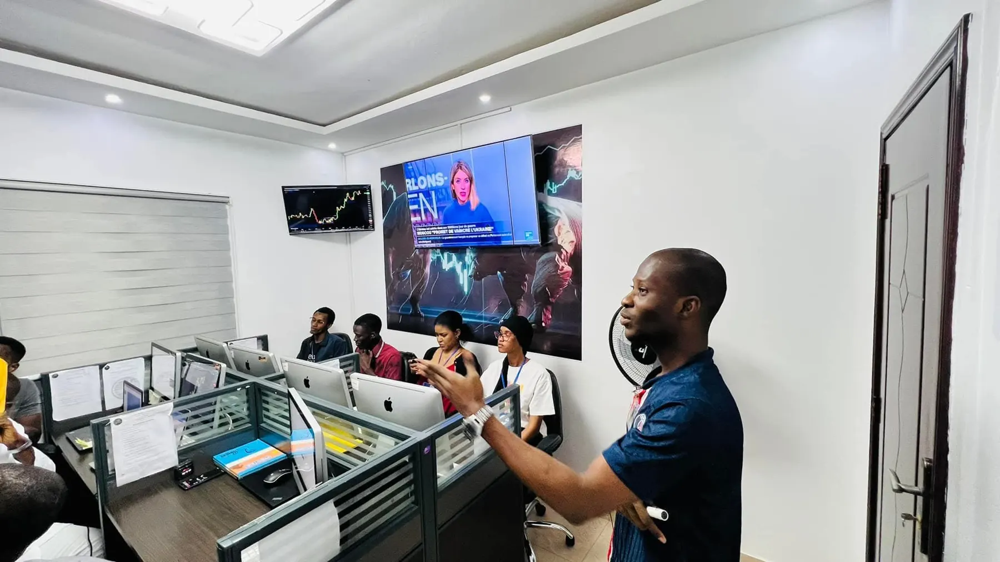

ÉducationEducation
Comprendre ce que l’on fait, et pourquoi on le fait.
Understand what you are doing, and why.

Un guide essentiel pour comprendre le marché des changes : son fonctionnement, ses acteurs, ses outils d’analyse — et surtout, ses risques.
An essential guide to the currency market: how it works, its players, its analysis tools — and above all, its risks.
Le Forex (Foreign Exchange) est le marché mondial des devises. On y achète une monnaie en vendant une autre, à travers un réseau de banques, d’institutions et de courtiers. C’est le marché financier le plus liquide au monde, ouvert 24h/24 du lundi au vendredi.
Forex (Foreign Exchange) is the global currency market. You buy one currency while selling another, through a network of banks, institutions and brokers. It is the most liquid financial market in the world, open 24 hours a day, Monday to Friday.
Les devises se négocient par paires : dans EUR/USD, l’euro est la devise de base et le dollar la devise de cotation. On distingue les paires majeures (avec le dollar américain), les paires croisées et les paires exotiques, plus volatiles et moins liquides.
Currencies are traded in pairs: in EUR/USD, the euro is the base currency and the dollar the quote currency. There are major pairs (with the US dollar), cross pairs and exotic pairs, which are more volatile and less liquid.
La journée de trading suit quatre grandes sessions : Sydney, Tokyo, Londres et New York. La liquidité et la volatilité varient selon les heures — en particulier lors du chevauchement Londres / New York.
The trading day follows four main sessions: Sydney, Tokyo, London and New York. Liquidity and volatility change throughout the day — especially during the London / New York overlap.
Elle étudie le prix lui-même : chandeliers, tendances, supports et résistances, structure de marché, zones de liquidité. L’objectif n’est pas de prédire l’avenir, mais d’identifier des scénarios à probabilité favorable.
It studies price itself: candlesticks, trends, support and resistance, market structure, liquidity zones. The goal is not to predict the future but to identify favourable-probability scenarios.
Taux d’intérêt, inflation, emploi, décisions des banques centrales, géopolitique : les données économiques font bouger les devises. Savoir lire le calendrier économique évite d’être surpris par une annonce majeure.
Interest rates, inflation, employment, central bank decisions, geopolitics: economic data moves currencies. Knowing how to read the economic calendar keeps you from being caught off guard by a major release.
C’est la compétence qui permet de durer. Risquer un faible pourcentage de son capital par position, placer systématiquement un stop loss, calculer sa taille de position et respecter une limite de perte journalière.
This is the skill that lets you last. Risk a small percentage of your capital per trade, always use a stop loss, calculate your position size and respect a daily loss limit.
Peur de perdre, peur de rater une opportunité, excès de confiance, envie de se « refaire » : les émotions sont la première cause d’erreurs. Les reconnaître est le premier pas pour les maîtriser.
Fear of losing, fear of missing out, overconfidence, the urge to win it back: emotions are the leading cause of mistakes. Recognising them is the first step to controlling them.
Un plan de trading écrit, des routines avant et après chaque session, un journal tenu avec rigueur : la discipline transforme une connaissance en résultats constants dans le temps.
A written trading plan, routines before and after each session, a rigorously kept journal: discipline turns knowledge into consistency over time.
Les paires majeures offrent la meilleure liquidité et des coûts de transaction généralement plus faibles : elles constituent le terrain d’apprentissage idéal.
Major pairs offer the best liquidity and generally lower trading costs: they are the ideal learning ground.
Les horaires ci-dessous sont convertis automatiquement dans votre fuseau horaire. Le marché ferme le week-end, du vendredi soir au dimanche soir (heure de New York / Sydney).
The hours below are automatically converted to your time zone. The market closes over the weekend, from Friday evening to Sunday evening (New York / Sydney time).
Horaires indicatifs. Les heures exactes varient selon les courtiers et les jours fériés.Indicative hours. Exact times vary by broker and public holidays.
La première question d’un trader n’est pas « combien puis-je gagner ? » mais « combien suis-je prêt à perdre ? ». Cet outil applique la règle de base de la gestion du risque.
A trader’s first question is not “how much can I make?” but “how much am I willing to lose?”. This tool applies the core rule of risk management.
Il n’existe ni stratégie miracle ni gain garanti. Les traders qui durent ont tous construit les mêmes fondations.
There is no miracle strategy and no guaranteed profit. Traders who last have all built the same foundations.
Comprendre ce que l’on fait, et pourquoi on le fait.
Understand what you are doing, and why.
Répéter, journaliser, analyser ses trades sur la durée.
Repeat, journal and analyse your trades over time.
Suivre son plan, même quand les émotions disent le contraire.
Follow your plan, even when emotions say otherwise.
Protéger son capital pour rester dans le jeu.
Protect your capital to stay in the game.
Le trading comporte des risques.Trading involves risk. La majorité des traders particuliers perdent de l’argent en tradant des produits à effet de levier. Ne tradez jamais avec de l’argent dont vous avez besoin.Most retail traders lose money when trading leveraged products. Never trade with money you need.
Nos programmes vous guident étape par étape, avec la pratique en salle et le suivi de nos formateurs.
Our programs guide you step by step, with hands-on practice and trainer follow-up.